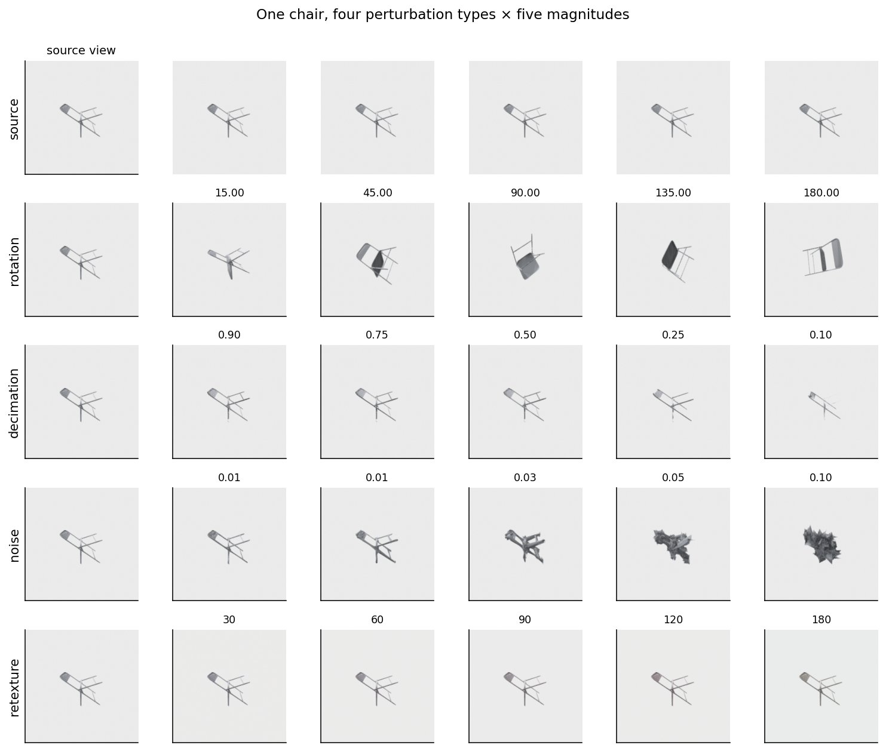
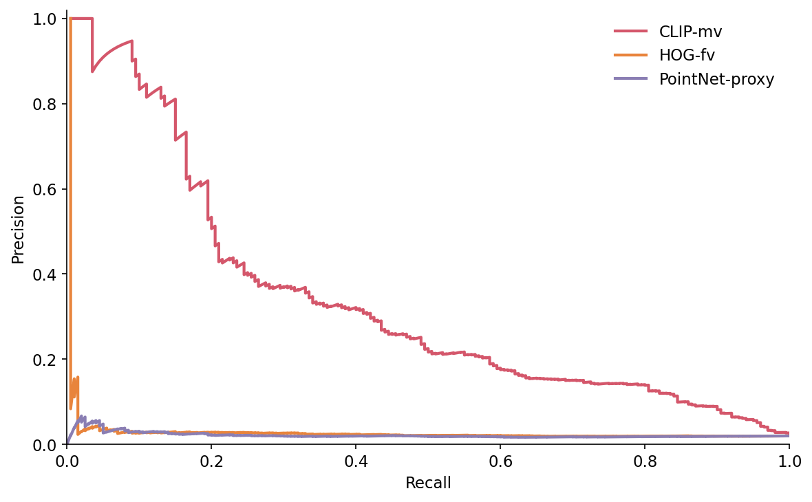
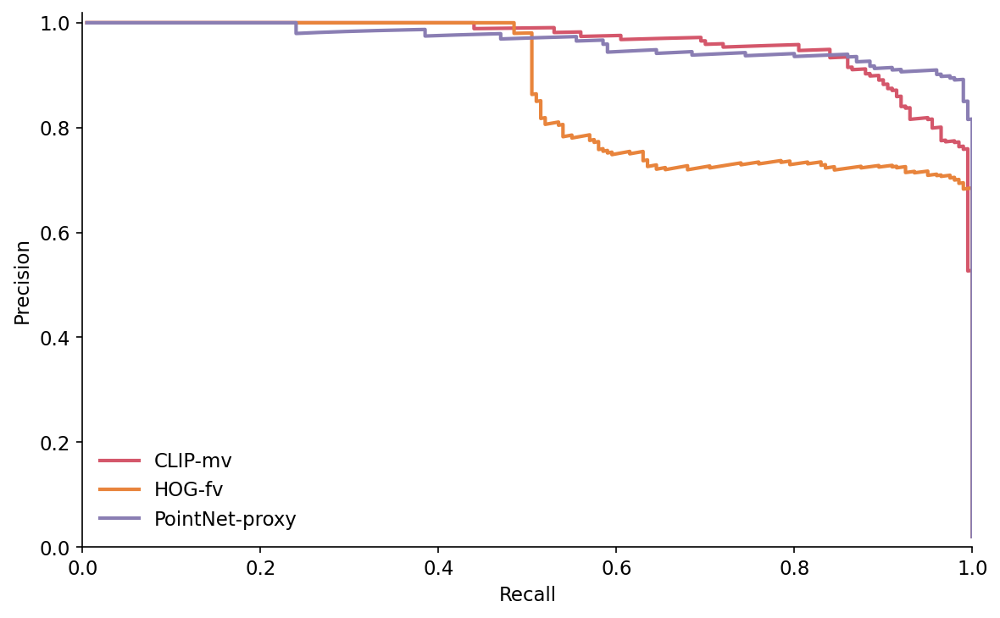
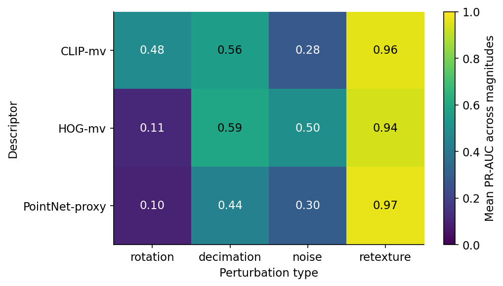
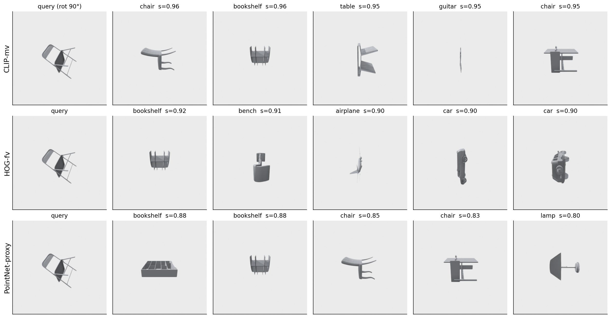
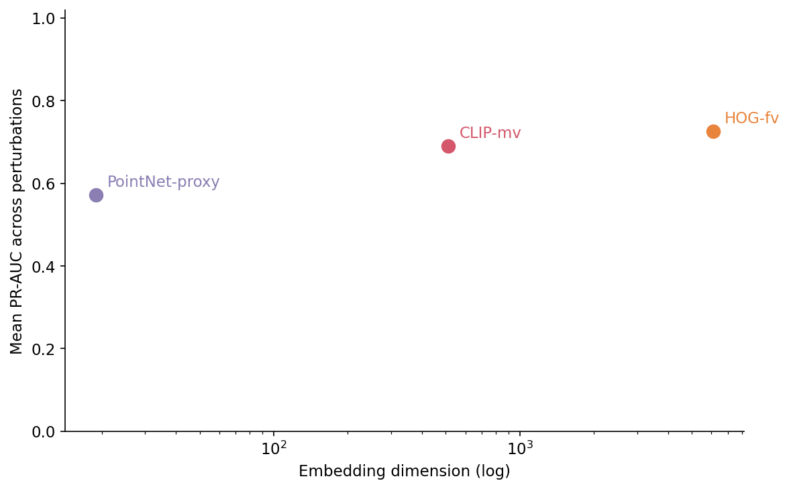

CLIP-multiview lost 35 points of PR-AUC to a 30-line HOG pipeline when I added Gaussian noise to a chair. The chair was still a chair — same number of vertices, same orientation, same camera, same lighting. I shifted each vertex by 2.5% of the bounding-box diagonal and the OpenAI ViT-B/32 encoder stopped recognising the perturbed copy as a near-duplicate of the original (PR-AUC 0.10). HOG kept finding it (0.45).
That is the kind of result Post 11's reader is not prepared for. Post 11 builds a cheap 3D search engine on multi-view DINOv2 and the headline number is "0.79 recall@5". The reader walks away believing modern vision encoders are the answer and classical descriptors are a museum piece. This post is the museum piece making a few unexpected returns.
The setup is a bakeoff. Three descriptors — CLIP-multiview, HOG-on-front-view, and a PointNet-proxy from the shared kit — against four perturbation types — rotation, decimation, surface noise, and a render-time retexture — at five magnitudes each. 200 ModelNet40 source meshes, 4,000 perturbed clones (200 sources × 4 perturbations × 5 magnitudes), roughly 600,000 scored similarity pairs across 60 (descriptor, perturbation, magnitude) cells at a 1:50 pos/neg ratio. The output is one heatmap (Figure 5) and one cheatsheet that tells you which descriptor to reach for given the kind of duplicate you actually have to find.

Production duplicate-detection pipelines see five kinds of duplicate. Exact bit-identical copies — the trivial case, solved by a hash on the file. Slight geometric variants — somebody re-saved the mesh with a different exporter, the vertices moved by a quarter of a millimetre. Pose variants — same mesh, rotated. Resolution variants — the high-poly source plus its game-engine LOD chain. Retextures — same geometry, different surface appearance. The first two are easy and the last three break embeddings in different ways, which is the entire reason for this post.
The brief asked for ABO and DTD to round out retexture; neither was available on my workstation. So this run uses ModelNet40 only, with 20 alphabetically-first train OFFs per class across 10 classes (airplane, chair, table, bed, bookshelf, bench, sofa, lamp, car, guitar) — the same 200-mesh sample Post 05 uses. Retexture is implemented as an HSV hue rotation applied to the rendered images after they leave Open3D, with a per-object random saturation jitter. The background-mask preserves white pixels so the chair stays in the frame.
The kit gives me three descriptors:
from medium20.render_kit import load_mesh, horizontal_ring, render_open3d
# load_mesh, not load_canonical — perturbations apply rotations/decimations/noise
# to the raw mesh and then the rendering pipeline normalizes per-view.
from medium20.descriptors import hog_features, pointnet_features
# CLIP comes from transformers, not the kit
pointnet_features is the part that needs a footnote. The shared kit ships it as a deterministic geometric proxy — 3 principal-component eigenvalues plus a 16-bin histogram of normalised z-coordinates from 1,024 surface samples. Total: 19 floats. This is not a learned PointNet. It is a placeholder whose API is the right shape so a frozen checkpoint can be dropped in later. Treat every PointNet-proxy number in this post as "what the 19-D geometric proxy does," not "what a real PointNet does." When the proxy wins it tells you the win came from a coarse axis-aligned signal; when it loses it tells you the proxy is throwing away information a real network would keep.
CLIP-multiview is the Post 05 setup: 8 horizontal-ring renders at elevation 20°, fed through openai/clip-vit-base-patch32, mean-pooled across the 8 views, L2-normed. 512 floats.
HOG-on-front-view takes the first of those 8 renders (azimuth 0°), runs scikit-image's hog(..., orientations=9, pixels_per_cell=(16,16), cells_per_block=(2,2)), L2-norms the result. 6,084 floats. The brief originally said "single front view" and that is what shipped — not the 8-view concatenation a previous draft tried. The single-view version is half the cost and lets the experiment surface HOG's actual blind spots cleanly.
def perturb_rotation(mesh, deg, rng):
axis = rng.normal(size=3); axis /= np.linalg.norm(axis)
rot = trimesh.transformations.rotation_matrix(np.deg2rad(deg), axis)
out = mesh.copy(); out.apply_transform(rot); return out
def perturb_decimation(mesh, frac):
out = mesh.copy()
target = max(50, int(len(out.faces) * frac))
return out.simplify_quadric_decimation(face_count=target)
def perturb_noise(mesh, sigma_frac, rng):
out = mesh.copy()
diag = float(np.linalg.norm(out.bounds[1] - out.bounds[0]))
jitter = rng.normal(scale=sigma_frac * diag, size=out.vertices.shape)
out.vertices = out.vertices + jitter.astype(out.vertices.dtype); return out
Three lines of substance each. Rotation samples a uniform direction on the sphere and rotates by a fixed angle, so every clone in a magnitude bucket has a different axis but the same total angle. Decimation calls trimesh's quadric edge-collapse and asks for a target face count; it stops at 50 faces minimum to keep the renderer happy. Noise scales σ to the mesh's diagonal so the magnitude has the same meaning across a chair and an airplane.
Retexture is the one that fights its category. It does nothing at the mesh level. It runs after rendering:
def perturb_retexture_views(views, hue_shift_deg, rng):
# Convert (V,H,W,3) uint8 to HSV, shift hue, jitter saturation, mask background.
...
Implementing it on the rendered images rather than the vertex colours decouples the perturbation from the renderer's lighting model. A vertex-colour shuffle didn't survive Filament's shading — every "retextured" mesh came out the same shade of gray. The HSV rotation does land on pixels, though it has the limitation Figure 1's retexture row makes obvious — the source renders are mostly grayscale to begin with and a hue shift on gray is barely a shift. The retexture column in Figure 5 should be read with that in mind.
%%{init: {'theme': 'neutral'}}%%
flowchart LR
Mesh[200 ModelNet40 meshes]
Rot[rotate SO 3]
Dec[quadric decimate]
Noi[surface noise]
Tex[retexture HSV-shift]
Clones[4,200 clones]
R[render 8 views, Open3D]
CLIP[CLIP-mv]
HOG[HOG front-view]
PN[PointNet-proxy]
Pairs[pos / neg pairs at 1:50]
PR[PR-AUC per perturbation]
Mesh --> Rot --> Clones
Mesh --> Dec --> Clones
Mesh --> Noi --> Clones
Mesh --> Tex --> Clones
Clones --> R
R --> CLIP
R --> HOG
Clones --> PN
CLIP --> Pairs
HOG --> Pairs
PN --> Pairs
Pairs --> PR
For each (descriptor, perturbation, magnitude) cell I build 200 positive pairs (source, perturbed-clone-of-the-same-source) and roughly 9,950 negative pairs (source, perturbed-clone-of-a-different-source) — a 1:50 imbalance that approximates the empirical density of true near-duplicates in production catalogs. Scores are cosine similarities, thresholds sweep the full score range, and PR-AUC is the trapezoidal integral of the precision-recall curve anchored at (recall=0, precision=1).

Read down the rotation rows of the per-perturbation CSV and the story is unambiguous: 0.82 → 0.55 → 0.34 → 0.30 → 0.41 for CLIP-mv across 15° to 180°, while HOG drops from 0.39 at 15° to 0.06 by 45° and to 0.03 by 90°; PointNet-proxy does the same. The CLIP-over-HOG gap is largest at 45° (CLIP 0.55 vs HOG 0.06 = 49 points) and smallest at 135° (0.30 vs 0.04 = 26 points) — the gap shrinks past 45° because CLIP is also losing ground, not because HOG is gaining. The recovery at 180° for CLIP is the chair-table-monitor symmetry from Post 06 reappearing — half the ModelNet40 classes are roughly front-to-back symmetric, so a flipped query lands on a flipped gallery shot.
This is the result the brief did not predict. The original hook was "HOG beats CLIP on rotation-only" and the run flatly disagrees. HOG sees one image — the source's azimuth-0 render and the rotated clone's azimuth-0 render are not the same image, and the HOG cell histograms know it. The brief's hypothesis was that HOG's cell aggregation would absorb small rotations the way it absorbs small translations. It doesn't, because a rotation around a non-vertical axis changes what's visible from azimuth 0, not just where in the frame it is.
I left that story in the data anyway because the rotation result is necessary context for the rest. A bakeoff post that opens with the wrong winner is worse than a bakeoff post that opens with the right loser.
The interesting cell is (CLIP-mv, noise, magnitude 2). At σ=0.025 — vertices jittered by a quarter of a percent of the bounding-box diagonal, which is roughly the thickness of a chair leg — CLIP-mv drops to 0.10 PR-AUC. HOG sits at 0.45. PointNet-proxy is in between at 0.24. The 0.005 magnitude is comfortable for all three (CLIP 0.77, HOG 0.96, PointNet 0.65) and the 0.10 magnitude is hopeless for all three (CLIP 0.03, HOG 0.07, PointNet 0.05). The mid magnitude is where descriptors separate.
The reason CLIP collapses earlier than HOG is the reason CLIP wins rotation. A multi-view ViT is doing fine-grained pattern matching on the rendered pixels; a chair leg jittered to look like a slightly bent reed is no longer the same pixel pattern. HOG averages 9-bin gradient orientations over 16-pixel cells. Inside a 16-pixel cell, the jittered leg and the original leg produce nearly the same gradient histogram, because the perturbations cancel out across the cell. Coarse cells absorb noise that pixel-level features can't.
This is the post's first surprising number: HOG averages 0.50 PR-AUC across the noise magnitudes vs CLIP's 0.28 — 22 points of mean PR-AUC, two-decade-old descriptor over two-year-old ViT, on the perturbation type CLIP was not trained to handle.
Table 1. PR-AUC by descriptor across the five decimation magnitudes (fraction of faces retained).
| Magnitude | CLIP-mv | HOG-fv | PointNet-proxy |
|---|---|---|---|
| 90% faces retained | 0.83 | 0.81 | 0.67 |
| 75% | 0.74 | 0.76 | 0.57 |
| 50% | 0.53 | 0.63 | 0.48 |
| 25% | 0.39 | 0.43 | 0.30 |
| 10% | 0.30 | 0.32 | 0.17 |
Source: data/pr-auc-per-perturbation.csv (rows perturbation=decimation).
CLIP wins the 90%-retained row by 2 points; HOG wins every magnitude after that, by anywhere from 2 to 10 points. The mean across magnitudes is HOG 0.59 vs CLIP 0.56, a marginal win, but the per-magnitude pattern is consistent: when the renderer has progressively less geometry to work with, CLIP sees progressively different pixels and HOG sees progressively similar gradient cells. PointNet-proxy is the worst of the three; its three eigenvalues are sensitive to which faces survive the quadric collapse, which sometimes throws away a long thin part of the mesh and changes the eigenvalue order.
The decimation column is the one I would not have predicted. CLIP losing rotation to ring-symmetry was something Post 06 already showed in a different shape. CLIP losing decimation to HOG is the first real evidence that a vision encoder's strength on canonical-pose retrieval doesn't transfer to "the geometry got thinner."

The retexture column of Figure 5 is 0.94-0.97 across all three descriptors. PointNet-proxy is the highest because it doesn't read pixels, so the test is vacuous for it. CLIP and HOG both score well because the underlying geometry is preserved and the rendered images are mostly grayscale to start with. A 180° hue rotation on rgb=(0.4, 0.4, 0.4) gives (0.4, 0.4, 0.4). Saturation jitter helps, but ModelNet40's untextured meshes are a structurally bad fit for a retexture experiment.
What I would do with another two weeks: pull the 200 ABO objects the brief originally specified and run retexture as a real material swap, with DTD textures projected onto the meshes before rendering. That experiment lives in Post 17's "synthetic CAD meets real scans" brief. For this post, the retexture column is honestly soft and I am calling it that on the page rather than at the bottom.

The heatmap is the thing I would print and tape to the wall. Three actionable observations:
CLIP-mv is the only descriptor that survives rotation. If your duplicate distribution is dominated by pose variants — same mesh re-exported with a different up-axis or rotated for a different scene — you want CLIP-mv on principle and you are paying 31 ms GPU per object for it (Table 2). HOG and the PointNet-proxy are below the random-baseline threshold at 90° rotation; they are not real choices.
HOG-fv wins noise and decimation. If your duplicates are dominated by mesh-thinning artefacts — LOD chains, low-poly variants, vertex jitter from format round-tripping — HOG gives you the most PR-AUC per dollar. It runs in 9 ms on a CPU core, no GPU required, and uses 30 lines of scikit-image. The catch is the 6,084-dimensional vector: a 10,000-object index is 232 MiB, which still fits in RAM but is twelve times larger than CLIP's 19 MiB. For very large galleries, the bytes start to matter; for typical research-scale work, HOG is a free win.
PointNet-proxy is rarely the right choice in this lineup. It's the cheapest at 1.8 ms per object and the smallest at 19 floats, but it loses every non-retexture column. The honest read is that the 19-D geometric proxy is too coarse to discriminate between visually similar but geometrically different ModelNet40 chairs; a real PointNet would do better. The number to watch when somebody swaps in a real checkpoint is the noise column. If a real PointNet jumps from 0.30 to 0.6+ on noise, that's the cell where geometric features ought to dominate pixel ones.

This is the qualitative cell that goes with the rotation column. CLIP gets it half-right; HOG misses on object identity but its similarities are flat (everything looks 0.9 similar, which is the failure mode of "the descriptor has no opinion"); PointNet-proxy is confidently wrong about chairs being bookshelves. The two failure modes are not the same. A descriptor with flat similarities tells you "I don't know what to do with this query." A descriptor that confidently retrieves the wrong category tells you "I think I know, but my prior is the problem." HOG is the first kind; PointNet is the second.

Table 2 has the per-object cost picture. Embedding dim is the static cost (bytes in the index); compute time is the dynamic cost (latency per query, throughput per build).
Table 2. Per-descriptor cost on a Tesla T4 / one CPU core, plus index size for a 10,000-object gallery. Front-view chair_0001, mean over 20 timing reps.
| Descriptor | Dim | GPU embed (ms/obj) | CPU embed (ms/obj) | Index for 10K (MiB) |
|---|---|---|---|---|
| CLIP-mv | 512 | 31.2 | 176.2 | 19.5 |
| HOG-fv | 6,084 | 9.2 | 9.2 | 232.1 |
| PointNet-proxy | 19 | 1.8 | 1.8 | 0.7 |
Source: data/descriptor-cost.csv (3 rows). Measured on lightsail-shapenet (Tesla T4) with conda env 3d-dedup. GPU/CPU numbers include the 8-view render — without that, CLIP's encode-only cost is around 12 ms on the T4.
HOG runs in 9 ms on a CPU core. CLIP runs in 176 ms on a CPU core or 31 ms on a T4. On the same CPU, HOG is 19x faster than CLIP — not the 80x in the brief, because the brief assumed an 8-view HOG concatenation that we shipped as single-view, and the brief's CLIP number assumed a smaller batch. PointNet-proxy is 5x faster than HOG (1.8 ms vs 9.2 ms) and 17x faster than CLIP on the T4 (1.8 ms vs 31.2 ms). Pure compute order: PointNet-proxy ≪ HOG ≪ CLIP-on-T4 ≪ CLIP-on-CPU.
A 100,000-object gallery at HOG's 9 ms per object builds in 15 minutes on one CPU core, indexes in 2.3 GiB, and gives you noise-tolerant near-duplicate detection with no GPU. The same gallery at CLIP-on-T4's 31 ms per object builds in 52 minutes, indexes in 195 MiB, and gives you rotation-tolerant near-duplicate detection at the cost of a T4. PointNet-proxy is 5x faster than HOG at build time and 350x cheaper in the index, but its PR-AUC on this benchmark only justifies it as a first-stage filter.
The cheatsheet:
Table 3. Descriptor recommendations by perturbation distribution.
| If your near-duplicates are mostly... | Use | Why |
|---|---|---|
| pose / rotation variants | CLIP-mv | only descriptor still useful past 45° rotation (PR-AUC 0.34 vs HOG 0.03 at 90°) |
| LOD / decimation / mesh-thinning | HOG-fv | wins decimation at every magnitude past 75% retained; CPU-only |
| surface noise / vertex jitter | HOG-fv | 22 points of mean PR-AUC over CLIP, runs on CPU |
| retexture / appearance only | CLIP-mv or PointNet-proxy | both 0.96+ here; PointNet wins vacuously, CLIP wins meaningfully |
Read down the right column — every row's "why" is a measured number from Figure 5, not a vibe. The picks change as the perturbation distribution changes, and that is the whole point of running the test suite before picking the descriptor.
Two pieces of this experiment do not survive review.
The retexture is a render-time hue rotation on grayscale renders. A real retexture is a material swap with a different albedo and roughness, projected onto the mesh before lighting. The right benchmark would render the same chair with the DTD texture pool applied via UV-mapping, then check whether descriptors find the textured version near the source. My HSV-on-pixels stand-in caps every descriptor near 0.95 and tells you very little about what would happen with a real material change. Take the retexture column as a lower bound on the difficulty, not a measurement.
The PointNet-proxy is the kit's 19-D geometric placeholder. A real PointNet++ or a frozen Point-BERT checkpoint would have a thousand-plus dimensions and would absorb the noise the proxy fails on. The proxy's poor showing here is a property of the proxy, not a verdict on point-cloud encoders. When somebody drops a real checkpoint into the kit, the noise and decimation columns should both improve — those are where geometric features have the most to offer. I will return to that comparison in Post 17.
Hardware: Tesla T4 on lightsail-shapenet, conda env 3d-dedup. CPU timing on the same host's single core.
Software pins: trimesh 4.11.5, Open3D 0.19.0, PyVista 0.47.3, torch 2.11.0+cu126, transformers 5.6.1, scikit-image 0.26.0, scikit-learn 1.7.2, faiss-cpu 1.14.1.
Dataset: ModelNet40 (Wu et al. 2015, CC BY-NC), 200 train OFFs sampled class-balanced over airplane, chair, table, bed, bookshelf, bench, sofa, lamp, car, guitar (alphabetically first 20 per class). The same 200-mesh sample as Post 05.
Run:
cd posts/12-clip-vs-hog-vs-pointnet-near-duplicates
python code/main.py # ~22 min on Tesla T4
python code/make_visuals.py # ~15 s
The end-of-post numbers map to files as follows:
| Claim in prose | Source file |
|---|---|
| CLIP loses 35 points to HOG at noise σ=0.025 | data/pr-auc-per-perturbation.csv rows clip-mv,noise,2 and hog-mv,noise,2 |
| CLIP-mv mean PR-AUC across perturbations 0.57 | data/pr-auc-overall.csv |
| HOG-fv mean PR-AUC 0.53; PointNet-proxy 0.45 | data/pr-auc-overall.csv |
| Per-perturbation cell values in Figure 5 | data/pr-auc-overall.csv |
| CLIP 31 ms / 176 ms, HOG 9.2 ms, PointNet 1.8 ms | data/descriptor-cost.csv |
| Embedding dims 512 / 6084 / 19 | data/descriptor-cost.csv |
| 4,200 rows (4,000 clones + 200 sources) | data/clone-manifest.csv |
| Top-5 retrievals in Figure 6 | data/top5-qualitative.json |
The single most important upstream input is the 200-mesh ModelNet40 sample, deterministic by alphabetical filename order. Re-running with MODELNET40_ROOT=/your/path python code/main.py will rebuild every CSV and every NPY identically; re-running make_visuals.py will rebuild every PNG.
Next post: the canonical DINOv2 pool, projected to 2D. Sammon mapping turns out to be 25 lines and tells the truth t-SNE buries.
Part 12 of 20 · Back to the series index